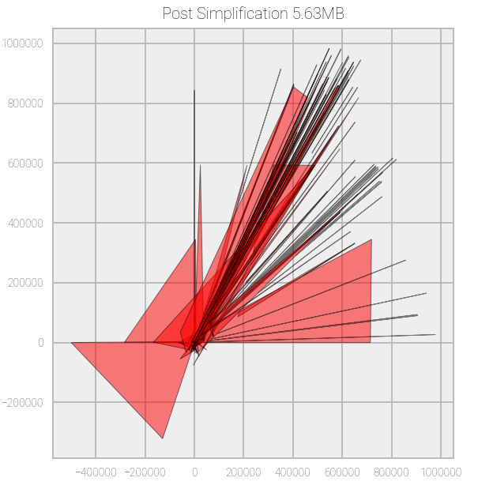

Caveats & Roadmap
Known Issues
Known issues are the bugs or errors that have been reported, and that we intend to fix as soon as possible. You can view a list of all known issues (past and present) on our issue tracker.
| Issue ID | Description | Fix Version Target |
|---|
Known Oddities
Known oddities are issues that we or others have identified, but either don't require a fix or we don't intend to fix. You can click on any of these to get more information, or contribute to the conversation. Some of these may eventually be promoted to issues if there is significant community demand. You can view a list of all known oddities on our issue tracker.| Issue ID | Description |
|---|
Roadmap
The below items are enhancements that we intend to apply to geoBoundaries in the future. You can also view our entire roadmap in our repository.| Issue ID | Description | Version Target |
|---|
Contributing Boundaries
We welcome new submissions to geoBoundaries, and will openly assess any submissions you might want to make that would improve our data. Right now, we accept submissions that are:
- Compatible with the Open Data Commons Open Database License.
- Of higher quality (either spatial or temporal) than our existing data.
- Provisioned with clear and full metadata about the source of the file.
If you have a boundary (or set of boundaries) that you believe meets the above qualifications and you would like us to include, please either send us an email (team@geoboundaries.org) with the boundary data, or submit a new issue on our Git repository (https://github.com/wmgeolab/gbRelease/issues/new) that contains the country, source, and license of the boundary (all information must be verifiable). Once we receive your request, we will publish it on GitHub as an Issue (unless you created it already), and accept comments on the boundary until the next major point release of geoBoundaries.